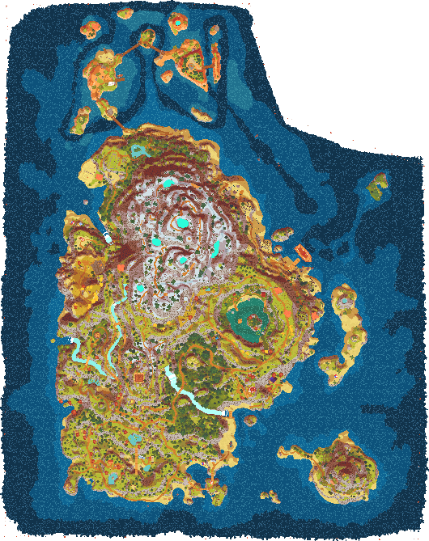

Help
Map
Hover the items on the map to display their informations
Compass
Click on the compass to reset the map position
Menu Bar
Click an item to show/hide it on the map
Hold Ctrl+Click to show only the selection
Hold Shift+Click to reset the selection
Hold Alt+Click to invert the selection
